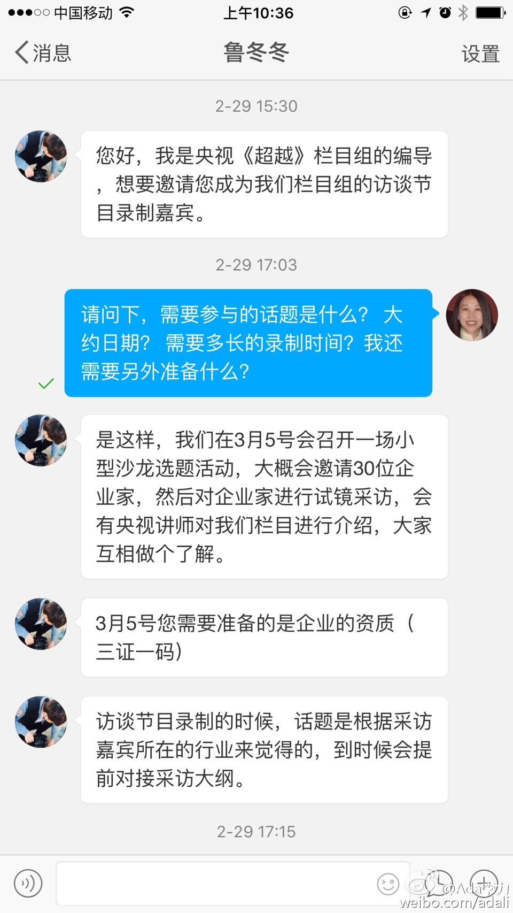

#创业#有些套路还是不熟悉，会相当受伤。合作时谈的是双方共同出力出资源，也商谈到执行细节，招商文件都发出去几份了，忽然跳出来说要150万的冠名费。NND, 早点提这事儿，鬼才跟你谈合作，浪费这么多时间。创业公司少跟官僚机构打交道。那帮孙子，想痛宰你还一副施恩与你高高在上的表情。
央视挺不要脸的了吧，狮子大口也没地方机构大。 //@Ada李力:CCTV证券资讯频道《超越》栏目，最近微博上行骗更加疯狂，频发私信骚扰。广而告之。@Ada李力:央视什么时候学会在微博上行骗了。周末被所谓的访谈嘉宾忽悠过去，结果是听了培训师滔滔不绝讲了2小时，然后就轰大家去做初审缴费。今天私信又来了，换了个名头骗，优秀企业家？！！！ 
明俊收拾桌上#姣姣#吃的零食包装袋时，疑惑而又认真地说：“真是搞不懂你们女人”。他确实搞不懂我为什么要买那么多东西，姣姣为什么要不停地吃零食，闺女和老婆为什么有那么多念头和理由...姣姣听到后嘀咕：“爸爸他怎么不找个同性呢？”
#姣姣#让我帮她复习英语，因为第二天是英语的期末考试。我说考试前还复习啥，你打会儿游戏吧，放松放松。姣姣说不行，就要复习我说看半个小时吧，然后早点睡觉姣姣说不行，至少要看一个多小时…我生闺女时一定是把好运气都用足了，抓了张子女彩票。
有家长抱怨说孩子学习负担重，一部分原因是现在的趋势是学生学习的内容越来越超前。比如，闺女初一写的英语作文水平，大概是我高三的水平；初中就学习微积分，这是我上大学后才学的。@Ada李力:#姣姣#让我帮她复习英语，因为第二天是英语的期末考试。我说考试前还复习啥，你打会儿游戏吧，放松放松。姣姣说不行，就要复习我说看半个小时吧，然后早点睡觉姣姣说不行，至少要看一个多小时…我生闺女时一定是把好运气都用足了，抓了张子女彩票。